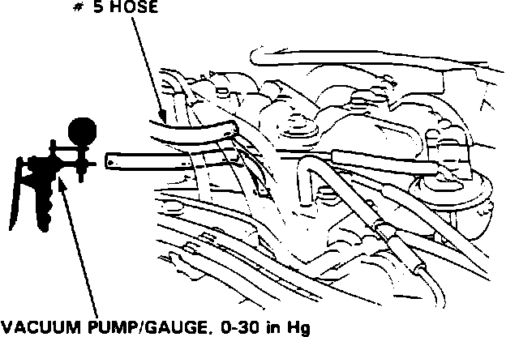
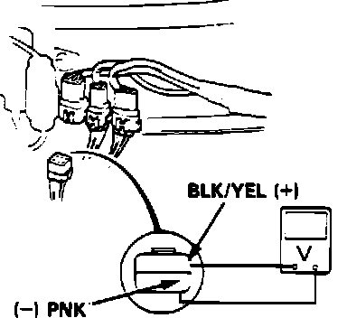

Air Suction Control System
This procedure tests ECU air suction control (solenoids) only and assumes the air suction system has failed inspection. For beginning of test procedure, refer to Emission Controls.Air Injection Solenoid Testing:

TEST 1
1. Start engine and run until cooling fan comes on
2. Disconnect #7 vacuum line from intake manifold and connect vacuum gauge.
Vacuum, proceed to step 4.
No vacuum, proceed to next step.
3. Remove restriction from vacuum port. End of test
4. Reconnect vacuum hose.
Air Injection Solenoid Connector Identification:

5. With ignition off, disconnect air suction solenoid 6 wire connector.
6. During deceleration above 9 mph and 1,500 RPM, measure voltage between BLK/YEL and GRY terminals.
Voltage, replace air suction solenoid. End of test.
No voltage, proceed to next step.
7. Check voltage between BLK/YEL terminal and ground.
Voltage, proceed to next step.
No voltage, proceed to step 9.
8. Check for open GRY wire between solenoid and ECU. If wire checks good, replace electronic control unit. End of test.
9. Check #22 fuse in under dash fuse box. If fuse is OK, repair open BLK/YEL wire between fuse box and solenoid connector.
TEST 2
Air Injection Solenoid Connector Identification:
1. Start engine and run until cooling fan comes on.
2. Check for air suction noise (bubbling noise) from the air suction valve during operation above 9 mph and 1,500 RPM.
Bubbling noise heard, proceed to next step.
No bubbling noise, replace air suction control solenoid. End of test.
3. Air injection system is OK.